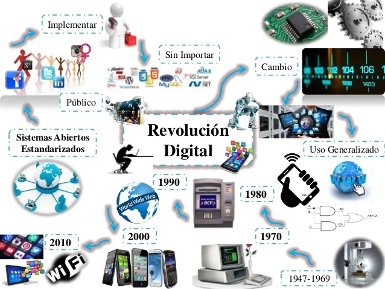

La Revolución Digital comenzó a gestarse a mediados del siglo XX, cuando la tecnología informática empezó a desarrollarse con rapidez. Uno de los eventos clave fue la creación de las primeras computadoras electrónicas durante la Segunda Guerra Mundial. A lo largo de los años 60 y 70, las computadoras evolucionaron, volviéndose más accesibles para empresas y universidades.
Sin embargo, el verdadero punto de inflexión ocurrió en los años 80, con la llegada de las computadoras personales. Compañías como Apple y Microsoft impulsaron el uso doméstico de la informática. La posibilidad de tener una computadora en casa cambió por completo la forma de trabajar, aprender y comunicarse.
A finales de los 90, la masificación de Internet marcó el inicio de una nueva etapa digital. El acceso global a la información, la comunicación instantánea y la digitalización de procesos fueron solo algunas de las consecuencias. Desde entonces, el avance no se ha detenido: la telefonía móvil, el internet de alta velocidad, las redes sociales y la inteligencia artificial son ejemplos claros de cómo la tecnología ha transformado todos los aspectos de nuestra vida.
Hoy vivimos en un mundo hiperconectado, en constante cambio, donde lo digital influye en nuestra educación, trabajo, entretenimiento y relaciones sociales. La Revolución Digital no solo continúa, sino que evoluciona a una velocidad sin precedentes, moldeando el futuro de la humanidad.
